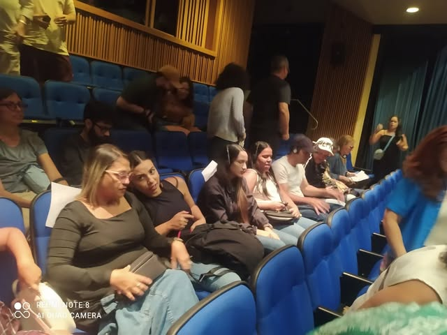
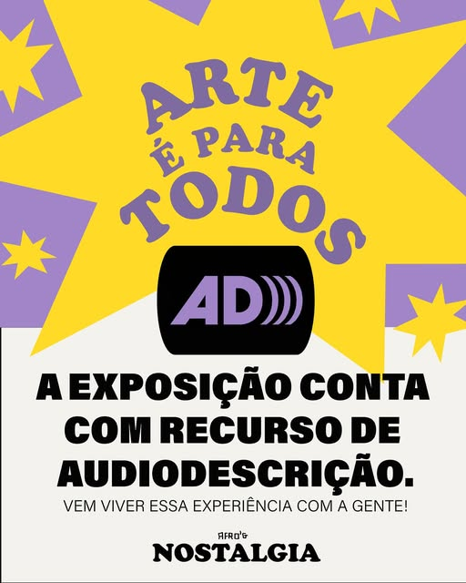

Direto do Nosso Instagram (@sonar_acessibilidade)
Acompanhe um pouco da nossa atuação prática em mostras internacionais, festivais de cinema, espetáculos teatrais e exposições sensoriais.
 Cinema & Animação
Cinema & Animação
Festival Animage 2026
Grande contrato de acessibilidade: 20 sessões de exibição em 10 noites de festival, com audiodescrição presencial, LSE com sonoplastia de dezenas de animações e visitas guiadas.

Formação de PúblicoSessões Acessíveis em Salas de Cinema
Mediação e recepção de pessoas com deficiência visual e auditiva no cinema, garantindo acolhimento atitudinal e tecnologia assistiva de ponta.
Espetáculo "Em Busca do Baobá Sagrado"
Audiodescrição ao vivo e legendagem inclusiva para espetáculos teatrais, traduzindo a poesia cênica, expressões e movimentos dos atores.

Artes Visuais & MuseusExposição Nostalgia (Museus e Galerias)
Audiodescrição poética de obras de arte, esculturas e videoinstalações, tornando o patrimônio cultural aberto para todas as pessoas.